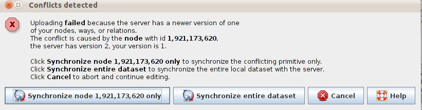
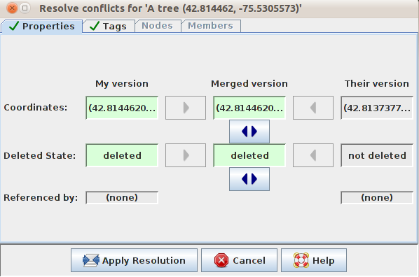
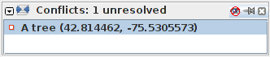
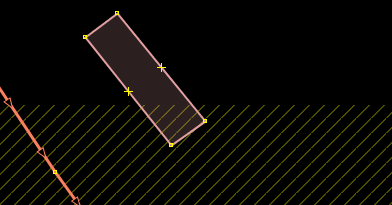

Chapter 8: Conflict Resolution in OSM¶
Learning Objectives
Finding and resolving conflicts in JOSM
Learning ways to avoid conflicts (using tasking manager)
8.1 Conflict in JOSM¶
When we are working with JOSM and about to upload the changes, sometimes we encounter this message:
This happens when you download a group of data that includes a particular point, let’s say point A. At the same time there are other people who also downloaded point A, making changes to it and upload it back to OSM. Now when you try to upload your changes (including point A) with your version, the version is already different from the server version. This causes the server to be confused on which version of Point A that is correct.
8.1.1 Resolving a Conflict¶
The process of resolving conflicts in JOSM is pretty simple, even though it might be confusing at first. Basically, all conflicts that occur in JOSM will leave you with two options – Your Version of the object and Their Version of the object that is on the server. You just need to choose which version you want to use, -your version or the new version in the server.
When a conflict window appears, you might want to choose the “Syncronize node … only”, but this will only resolve the conflict that occurs on the particular node. That is why it is better to choose the Synchronize Entire Dataset option so that you can resolve the conflicts all together.
When you click on that button, there will be a new window that includes all of the conflict details. The conflict messages might seems complicated, but actually they are quite simple. You will know the type of conflict you encounter by indicating where the symbol

located. Conflict in this example indicating that it is on the properties, such as location or the object’s position. You can see that the coordinate and state are deleted.
Types of Conflict:
Properties: Object has been moved (coordinate) or deleted
Tag: Object has different tags on both version
Node: There are differences on the node list
Members: There are differences regarding the members of a relation
Conflict just shows up on two different edits at the same time. If there are three or more different edits happen at the same time, chain of conflicts will occurs. You can only solve two conflicts at the same time. You can choose Your Version, Their Version, or merge the two changes.
In this example, you don’t have option to merge the changes. Click on the My Version column if you are sure that your version is the right one. Click on Their Version if you think that other mapper’s edit should be retained.
After you choose which version is best, click on the Apply Resolution as shown in the figure above. After you finished resolving all the conflicts, you can start to upload your changes.
Do some more editing. Then click Upload. You will get a pop-up like the one below that says:
On your Windows menu you have a Conflict List Dialog
This window displays a list of conflicts. The total number of unresolved conflicts is shown in the header. You can select or resolve a conflict by clicking on it. This is useful when you have many conflicts to deal with.
You cannot upload your changes until this list is empty and all conflicts have been resolved.
8.1.2 Tips to Avoid Conflict¶
Upload frequently
To minimise the chance and number of conflicts it is important to upload your edits regularly. Conflicts appear more frequently for those who tend to save the area they are working on in their local computer, but wait a while to upload their changes. It is best to download the area you are working on, edit it and then immediately upload it. The longer the time between downloading data and uploading changes to that data, the more likely it is that someone has edited something in the meantime.
ONLY edit in the area you download
Editing in the specific area you have downloaded minimises the risk of conflict. Make sure you do not edit outside of the area that you have downloaded. You can easily see the areas outside your download area in JOSM, because the background is made up of diagonal lines instead of being solid black.
Using the tasking manager
The OSM Tasking Manager is a tool that mappers can use to sort an area into a grid, and work together to map in an organised way. Apart from being more organised, the tasking manager is also one way to avoid editing conflicts, because it helps prevent more than one person from editing the same area at the same time.
The way the tasking manager operates is every mapper on a project selects one box from a grid overlaid on the mapping project area. This box represents a subsection of the mapping project area. When a mapper finishes mapping all features in their box, they can mark it as complete. This way, a team distributed in different areas can coordinate and work together to finish mapping in that grid.
To see how tasking manager works, let’s practice a bit more.
Open your internet browser and go to tasks.hotosm.org. You will see a page like this:
Click Log in to OpenStreetMap
Here you must agree to allow this application some access to your OSM account. To do so, click Save Changes.
Now you will see a list of projects that currently active from many country where they doing coordination for mapping activities.
Click on a project to see further information related to the task as shown in the figure below.
This page shows you everything you need to know about the project. On the left side of the page is a description of the mapping project and how it is being organised. You can click on the different tabs to get more information. On the right side is a grid showing the area to be mapped. Red grid squares have been completed, green squares have been completed and checked by another person, and the remaining squares still need to be mapped or are being worked on.
In the right side show an area that currently being map.
Orange box represent an area that already mapped
Green box represent an area that already mapped and validated by other people
Orange outline box represent there is someone who currently map in that area
Grey/empty box represent the task is unfinished.
You can click on tab Contribute, with click on Take a task at random if you want to pick task randomly or you can select a task manually in slippy map and then click Start Mapping
After that select Edit with JOSM (You need to open JOSM and enable remote control first)
You can also open another editing software such as iD Editor, Potlach 2 and Field Papers
After you finish editing and upload the data into OSM server, you need to go back to the tasking manager and click Mark task as done making sure to add a changeset comment for the edits you created. It’s important to let other mappers know that you have finished the grid square. If you cannot finish the task, click Unlock it so another mapper can finish your task.